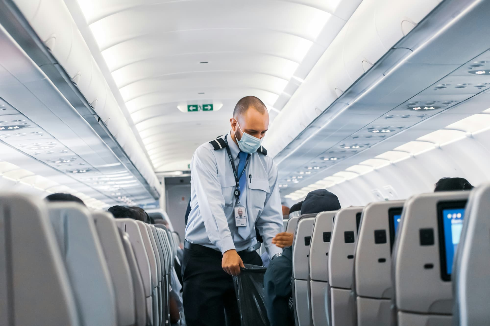
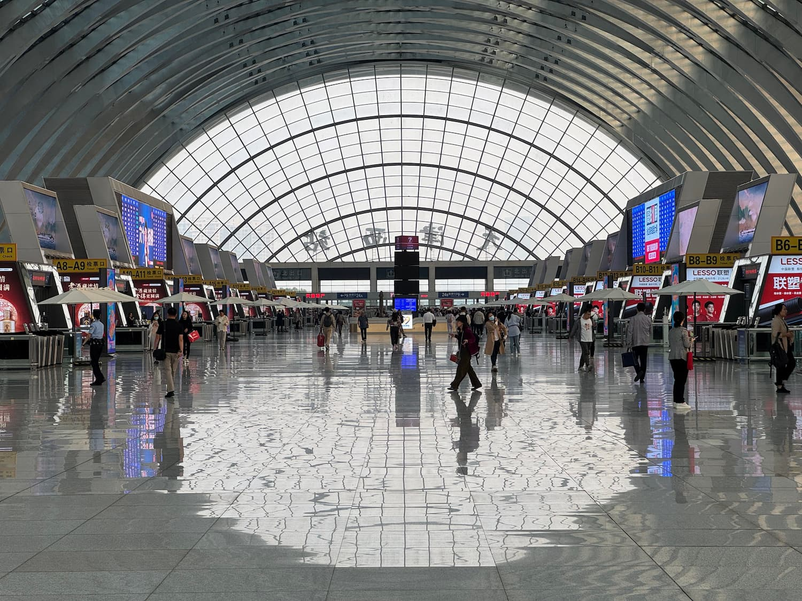

Curso Básico AVSEC
O Curso Básico AVSEC é o curso inicial que introduz um profissional à área da Segurança da Aviação Civil habilitando-o
para diversas atividades relativas à AVSEC tais como:
- Supervisionar o trânsito de passageiros entre a área de
embarque e a aeronave;
- Identificação e controle de acesso de pessoas e objetos às áreas restritas ou controladas de
aeroportos;
- Identificação e controle de acesso de pessoas à aeronave;
- Identificação e inspeção de pessoas e
veículos em controle de acesso de veículos;
- Inspeção das Provisões de Bordo ou serviço de bordo;
- Inspeção de
Área Estéril;
- Inspeção de bagagens, carga e objetos em geral por meio de cão farejador de explosivos;
- Inspeção
de pessoas;
- Inspeção de segurança da aeronave;
- Inspeção manual de objetos;
- Patrulhamento e vigilância das
instalações de produção e armazenamento de serviço de bordo e terminais de carga ou correio;
- Patrulhamento e
vigilância da área operacional de aeroportos;
- Patrulhamento e vigilância de canais de controle de acesso;
-
Realizar vigilância em provisões de bordo, serviço de bordo, carga ou correio ou bagagens despachadas;
- Consolidação
do Despacho AVSEC do voo;
- Proteção de área estéril ou de aeronave;
- Recebimento das Provisões na Aeronave;
-
Recebimento e identificação de carga ou correio na cadeia segura da carga; e
- Verificação de Segurança da
Aeronave.
É uma vasta área de oportunidades que você terá para se desenvolver profissionalmente.

Curso Inspeção de Segurança
O Curso Inspeção de Segurança é o curso que especializa um profissional da área da Segurança da Aviação Civil, além das
atividades habilitadas pelo curso Básico AVSEC. Algumas dessas atividades são:
- Inspeção de bagagens, carga e
objetos em geral por meio de raios X ou tomógrafos;
- Inspeção de pessoas por meio de body-scan;
- Revista (busca
pessoal) em pessoas;
- Supervisionar e monitorar a inspeção e revista de passageiros e bagagens;
- Supervisionar e
avaliar o treinamento em serviço da certificação em inspeção de segurança; e
- Realizar testes de controle de
qualidade.
Este curso aumenta ainda mais o leque de oportunidades que você terá na área AVSEC ao se especializar
nas atividades listadas acima sendo um grande diferencial.
Curso AVSEC para Operador Aéreo
O Curso AVSEC para Operador Aéreo tem a finalidade de ampliar e consolidar a competência técnica necessária à supervisão
das atividades AVSEC, gerenciar as medidas preventivas de segurança da aviação civil a serem aplicadas no
desenvolvimento das atividades de gerenciamento de Operadores Aéreos e preparar profissionais do Sistema de Aviação
Civil para atuar em Auditorias, Inspeções e Análises bem como gerenciar o Sistema de Controle de Qualidade AVSEC de
Operadores Aéreos, de acordo com a legislação em vigor. Algumas dessas atividades estão listadas abaixo:
-
Consolidação do Despacho AVSEC do voo;
- Supervisionar e garantir a implementação dos controles de segurança e
medidas de resposta pelo operador aéreo em âmbito nacional ou de aeródromo;
- Supervisionar e monitorar a inspeção e
revista de passageiros e bagagens;
- Supervisionar e avaliar o treinamento em serviço da certificação em inspeção de
segurança;
- Representar operador aéreo ou de aeródromo em eventos de segurança exigidos em norma, como CSA, ESAIA e
ESAB;
- Realizar atividade de controle de qualidade AVSEC, para operador aéreo, exceto testes; e
- Realizar testes
de controle de qualidade.
Curso AVSEC para Operador de Aeródromo
O Curso AVSEC para Operador de Aeródromo tem a finalidade de ampliar e consolidar a competência técnica necessária à
supervisão das atividades AVSEC, gerenciar as medidas preventivas de segurança da aviação civil a serem aplicadas no
desenvolvimento das atividades de gerenciamento de Operadores de Aeródromos e preparar profissionais do Sistema de
Aviação Civil para atuar em Auditorias, Inspeções, Análises, Testes e Exercícios bem como gerenciar o Sistema de
Controle de Qualidade AVSEC de Operadores de Aeródromos, de acordo com a legislação em vigor. Algumas dessas atividades
estão listadas abaixo:
- Avaliar os projetos de obras aeroportuárias, para garantir que os aspectos da AVSEC
estejam contemplados na concepção e execução dos projetos;
- Coordenar e gerir setor de segurança aeroportuária;
-
Supervisionar e monitorar a inspeção e revista de passageiros e bagagens;
- Supervisionar e avaliar o treinamento em
serviço da certificação em inspeção de segurança;
- Representar operador aéreo ou de aeródromo em eventos de
segurança exigidos em norma, como CSA, ESAIA e ESAB;
- Realizar atividade de controle de qualidade AVSEC, para
operador aeroportuário, exceto testes; e
- Realizar testes de controle de qualidade.

Curso AVSEC para Tripulante
O Curso AVSEC para Tripulante tem a finalidade de qualificar o tripulante preparando-os para assegurar a AVSEC tanto em
operações de solo como em voo conforme regulamentação da ANAC, RBAC 110. Algumas dessas atividades estão listadas
abaixo:
- Supervisionar o trânsito de passageiros entre a área de embarque e a aeronave;
- Atendimento a
Passageiro em voo;
- Operar aeronave em exploração de serviço de transporte aéreo públicos;
- Identificação e
controle de acesso de pessoas à aeronave;
- Realizar vigilância em provisões de bordo, serviço de bordo, carga ou
correio ou bagagens despachadas;
- Consolidação do Despacho AVSEC do voo;
- Proteção de área estéril ou de
aeronave;
- Recebimento das Provisões na Aeronave;
- Verificação de Segurança da Aeronave; e
- Contenção de
passageiro insdisciplinado a bordo de aeronave em voo.

Curso AVSEC para Atendimento ao Passageiro
O Curso AVSEC para Atendimento ao Passageiro tem a finalidade de qualificar o profissional para realizar todo
atendimento ao passageiro de Operador Aéreo tanto da aviação comercial como da aviação executiva com certificação ANAC.
Algumas dessas atividades estão listadas abaixo:
- Atendimento do Passageiro no check-in (despacho de passageiro)
ou identificação e aceitação (conciliação) de bagagem despachada;
- Supervisionar o trânsito de passageiros entre a
área de embarque e a aeronave;
- Identificação e controle de acesso de pessoas à aeronave; e
- Proteção de área
estéril ou de aeronave.